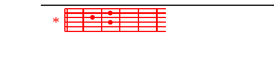

Cape 5
K.CMbele ya malEaika nataka kukuimD- *bia,
mbGele ya malaika nitakuimbia zaEburi;
nitalishukuru jina lD- *ako
kwa upFendo na uaminifu Ewako.
M.CNakushukuru, BEwana, na moyo D- *wote
kwa Gkuwa ahadi yako imepita umaarufu Ewako;
siku niliyokuita uliniitiD- *kia,
ukanifaFriji na kutia nguvu nafsi Eyangu.
K.CMbele ya malEaika...
M.CWatakusifu BEwana wafalme wote wa dD- *unia
Gwatakaposikia maneno ya kinywa cEhako
na wakiimba kwenye njia ya D- *Bwana
wataFsema ulivyo mkuu upendo Ewako.
K.CMbele ya malEaika...
M.CBwana yuko Ejuu na amwona mnyenyeD- *kevu
Gajua mwenye kiburi, amtazama toka mEbali;
nikitembea kati ya D- *shida
Fanyosha mkono, mkono wako wa kuume wanioEkoa.
K.CMbele ya malEaika...
M.CBwana ataEnitimilizia kazi D- *yake
kwani mGkuu na wa milele upendo Ewake;
haachi kazi ya mikono D- *yake.
Ee BFwana, usituEache.
K.CMbele ya malEaika...
